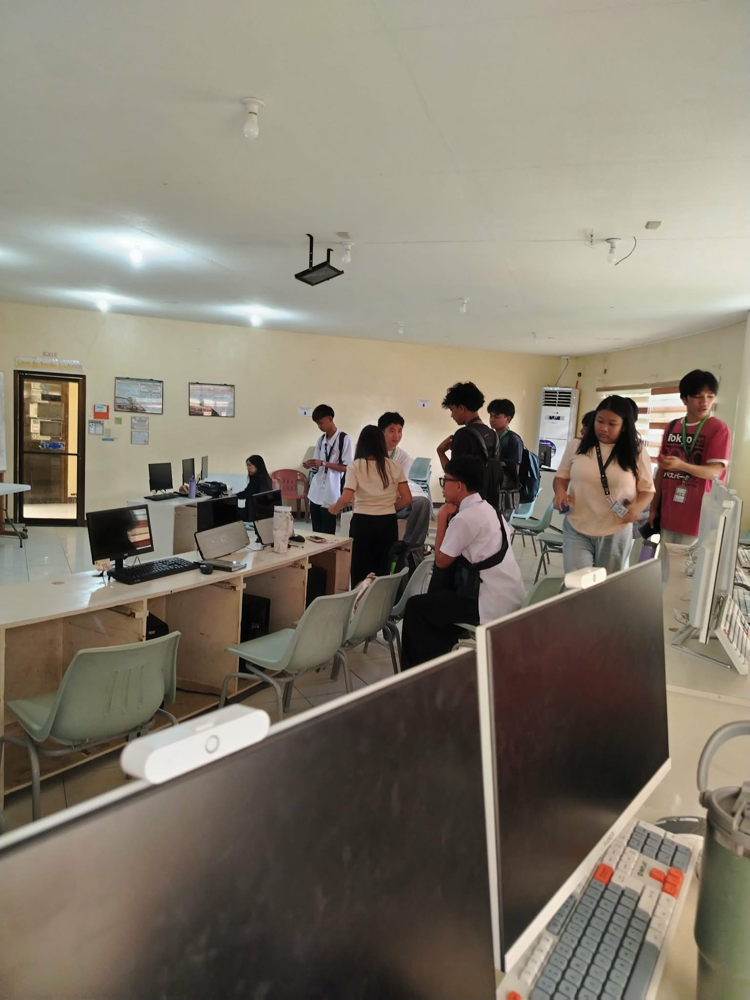

My Education
Moving Forward One Semester at a Time
I am currently in my first year of college, studying for a future I hope to build for myself and my family. Starting college has been a new experience, and I have learned that reaching my goals takes patience, courage, and hard work. There are days when my studies feel challenging, but I remind myself why I started.
Read more
I am about to begin my second semester, and I feel proud that I have made it this far. I still have a few years of studying ahead of me, so I know I need to keep working hard and stay focused. I hope I will be fortunate enough to finish my studies and graduate.
Even if I face difficulties or fail at some point, I hope I will not give up. I want to use what I have learned to create better opportunities for myself. In the future, I would also love to use my education abroad if I have the chance.
One of my biggest reasons for continuing is my family. I want to make them proud and help build a better life for us. My journey may not always be easy, but I believe every step forward matters, even when progress feels slow.
I will keep doing my best, take each semester one step at a time, and trust God to guide me through the journey. I hope He will always be with me in everything I do. To God be the highest glory.